Building Automation
Industrial Automation
Power Automation & Safety


Bangladesh Distributor
- Home
- Products
- Contact Us
Fiber Amplifier
Amplifier Units, simple operation and high performance, can select various Fiber Units depending on works and space.
Fiber Amplifier List
There are 11 products of Fiber Amplifier.
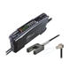 Color Fiber Amplifier Unit E3NX-CA
Smart Fiber Amplifier Units with White LEDs. High Color Discrimination Capability with the Same Easy Operation as Previous Fiber Amplifier Units. Existing General-purpose Fiber Units Can Be Connected.
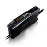 Smart Fiber Amplifier Units E3NX-FA
The Advanced Fiber Amplifier Units That Handles On-site Needs
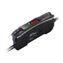 Smart Fiber Sensor E3X-HD
Surprisingly Stable Detection with Your Finger tip. Exceptionally easy operation and stabilizing technology reduce maintenance cost.
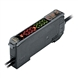 Digital Fiber Amplifier Unit E3X-DA-S
Stable Detection with Advanced Fiber Amplifier Units
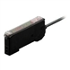 Color Sensing Digital Fiber Amplifier Unit E3X-DAC-S
Easy and Reliable. The Fiber Amplifier Unit That Sees in Color
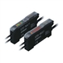 Simple Fiber Amplifier Unit E3X-SD / NA
Simple and Affordable Fiber Amplifier Units
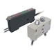 Wet Process Sensor E32-L11FP / L1[]FS, E3X-DA[][]TG-S
Stable Detection of Glass in Wet Processes. Non-contact Operation Simplifies Mounting and Maintenance.
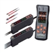 Digital Fiber Amplifier Unit E3X-DA-S / MDA
Advanced Fiber Amplifier Units
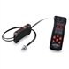 Digital Fiber Amplifier E3X-DA-N
The Ultimate Fiber Amplifier for Maximum Ease of Use and High Performance
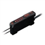 Simple Fiber Amplifier E3X-SD
The Standard for Fiber Amplifiers with Simple Operation and High Performance
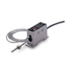 UV Power Monitor F3UV
Monitor the Output of a UV Light Source through an Optical Fiber Cable
Related Contents
- Fiber Sensors
© Copyright Kyoto Engineering & Automation Ltd. All Rights Reserved.